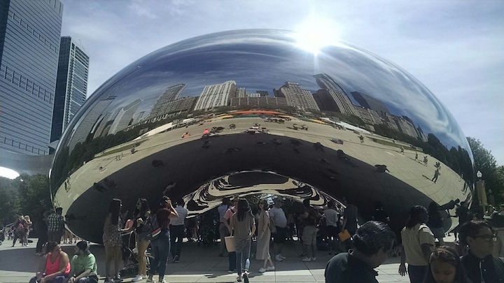

<!doctype html>
<html>
    <head>
        <title>Cade's Website</title>
        <meta charset="utf-8">
        <link href="https://fonts.googleapis.com/css?family=Roboto+Condensed" rel="stylesheet"> 
        <link href="https://fonts.googleapis.com/css?family=Raleway" rel="stylesheet">   
        <link href="https://fonts.googleapis.com/css?family=Lobster" rel="stylesheet">   
        <link href="app.css" rel="stylesheet"/>
    </head>
</html>
<header>
    <br>
    <h1>Cade's Website</h1>
    <br>
    <ul>
        <li><a href="index.html">Home Page</a></li>
        <li><a href="ATM.html">ATM</a></li>
        <li><a href="Future.html">Future</a></li>
        <li><a href="Soccer.html">Soccer</a></li>
    </ul>
</header>
<body>
    <article>
       <h2 id="All-About-Me">Soccer</h2>
    </article>

    <article>
        <h2>Beginning of a Long Journey</h2>
        <p><h3>Ever since I was 3, I had a soccerball at my feet. I was just a young girl at the time and everything was new and interesting to me. But this was a time when I didn't know any better. I would watch as the game played out in front of me. The stampede of little feet running past as I just stood mounted to my spot. Shouts and encouraging praises faded in the background as I stared up at the flying object. Who would think that a butterfly would be so fascinating? I would've never thought I would have made it this far.</h3></p>
        <center></center>
    </article>

    <article>
        <h2>Moving Up</h2>
        <p><h3>I was on many pewee (3-4 year olds) teams. From there I moved to AYSO (The American Youth Soccer Organization) which is youth soccer for children ages 4 through 19. Only spending a year in that organization, I moved to Signature (more competitive soccer players and experience). When I was 8, I began playing club which is higher competition. Only a year ago, I began ECNL. Elite Clubs National League is to made to change the landscape for elite female soccer players in the United States with innovative, player-centered programming and to enhance the overall experience by creating a better, more enjoyable, and more successful player, coach, and club development model.</h3></p>

    </article>


    <article>
    <h2>Achievements</h2>
        <p><h3>Over the course of my 11 years of playing soccer, I have gained many achievements. Just recently, I made the ODP (Olympic Developmental Player Pool) 2004 girls team. Out of the 1400 2004 girls, only 18 of them would make the actual team. I was one of the 18 that made it. I am most proud of this achievement because it reflects how hard I worked and how my effort was paid off.<br>
        <br>
        Another big achievement of mine would be when I traveled to San Diego and took part in a huge tournament known as State Cup. It was a weekends worth of games. We ended up winning all the first weekend games and advanced to the second round which would commense the next weekend. The second weekend we had another 3 games and we ended up pulling through to the 3 round. We won the first game and moved to the semi-finals. I scored the winning goal which moved us on to the championships. I ended up scoring 2 and assisting 1 goal which won us the game. Over the time span of 3 weekends, the team won State Cup. I was recognized by other teams because of our win.<br>
        <br>
        One of my other major achievement is when my ECNL Strikers 2003 team advanced into Nationals. We went to National Cup which was held in Chicago. Although we didn't win, making it that far was huge as we were the only team from California that advanced to the tournament.</h3></p>       
    <center></center>
    </article>

    <article>
        <h2>Places I've Gone Because Of Soccer</h2>
        <p><h3>Because of my talent in soccer, I have gone many places because of it. I have been granted chances to go to new states for soccer.</h3></p>
        <ul id="List-of-places">
            <strong><li id="Places-and-why">Dallas,Texas -</strong>Texan Tournament</li><br>
            <strong><li id="Places-and-why">Las Vegas, Nevada -</strong> Vegas Tournament</li><br>
            <strong><li id="Places-and-why">Phoenix, Arizona -</strong> Showcases, ODP Tournament, League Games</li><br>
            <strong><li id="Places-and-why">Chicago, Illinois -</strong> National Cup</li><br>
            <strong><li id="Places-and-why">Ohio, California -</strong> ODP Camp</li>
        </ul>
        <center></center>
    </article>
</body>
